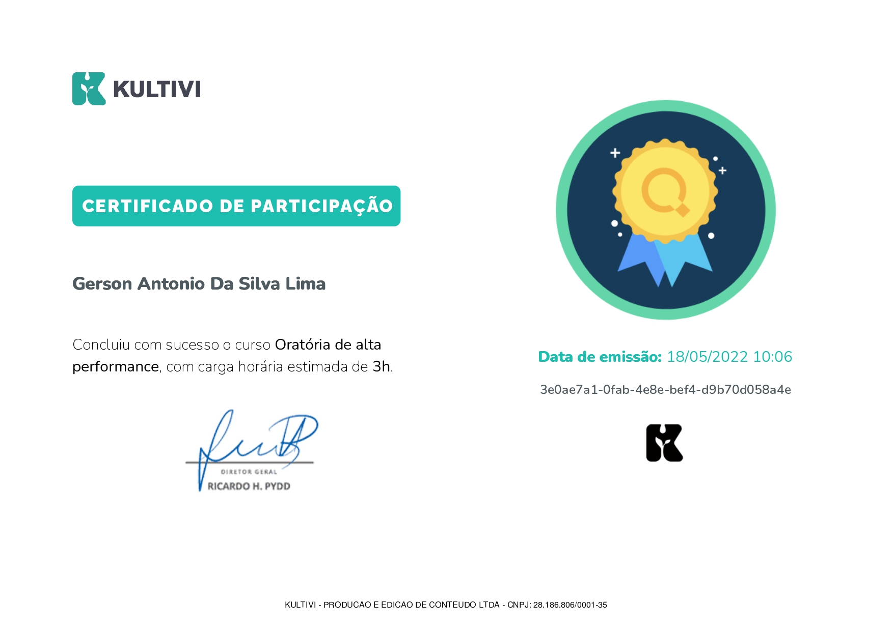
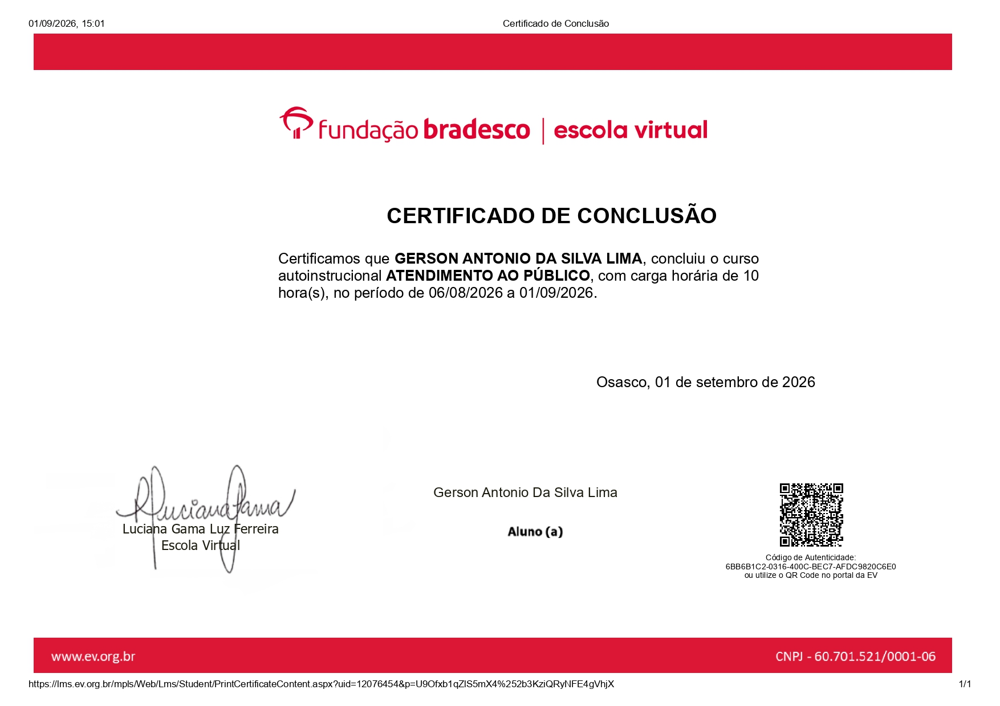

Portfólio pessoal
Site criado para apresentar minha trajetória, meus conhecimentos e meus certificados.
HTML
CSS
JavaScript
Desenvolvedor Front-end no Programa Trilhas
QUEM SOU EU
Olá! Sou Gerson Lima e tenho interesse em tecnologia, programação e desenvolvimento de soluções digitais.
Atualmente, estou desenvolvendo meus conhecimentos em desenvolvimento Front-end por meio do Programa Trilhas.
Meu objetivo é aprender continuamente, criar projetos e construir minha trajetória profissional na área de tecnologia.
MINHA PRÁTICA
Projetos desenvolvidos durante meus estudos.
Site criado para apresentar minha trajetória, meus conhecimentos e meus certificados.
Exercícios e aplicações desenvolvidos para praticar lógica de programação e interatividade.
FORMAÇÃO COMPLEMENTAR
Certificados dos cursos que concluí.

Kultivi · 2024

Fundação Bradesco · 2026